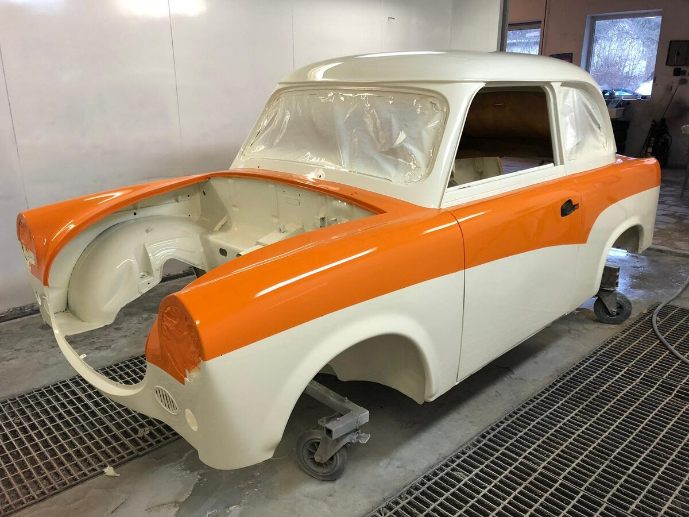
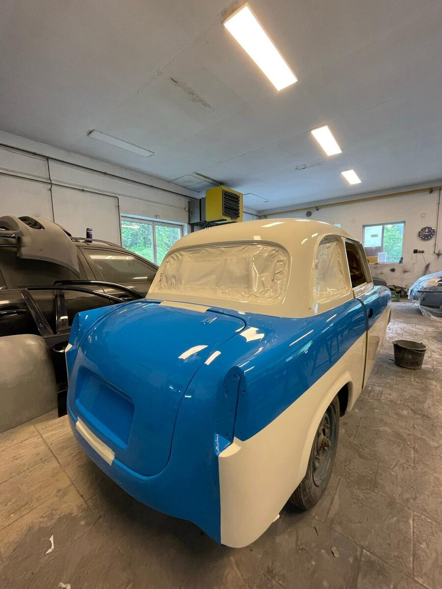
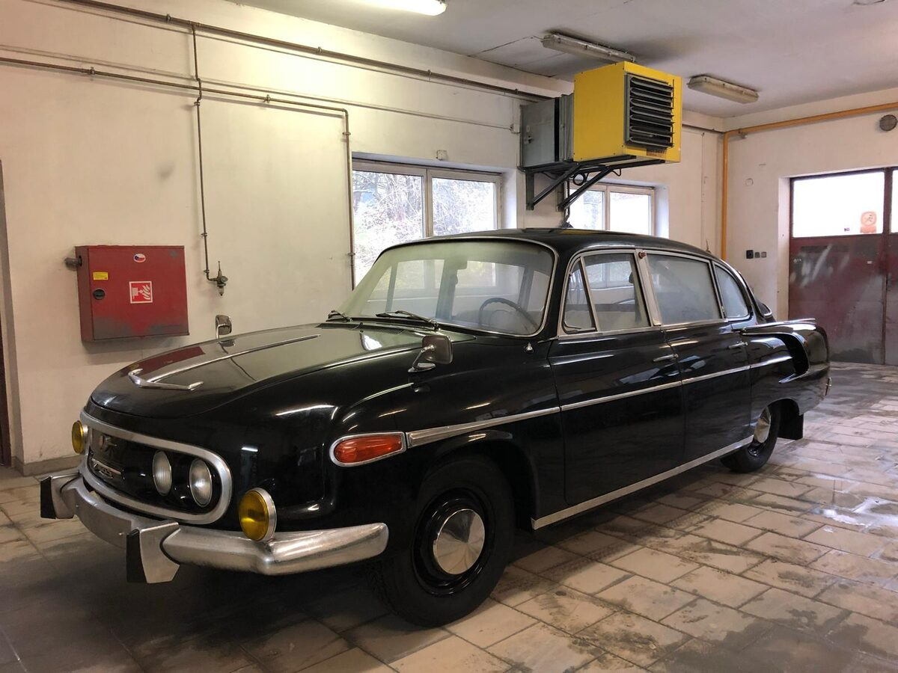
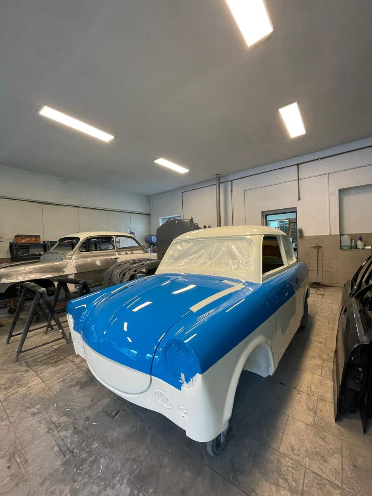
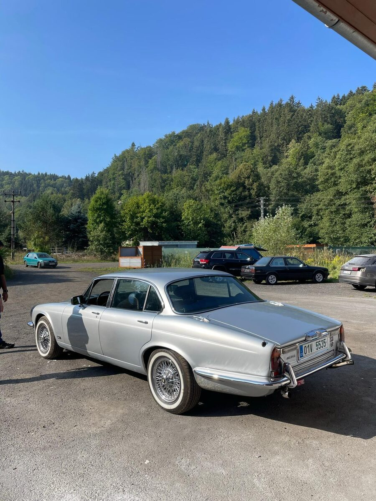
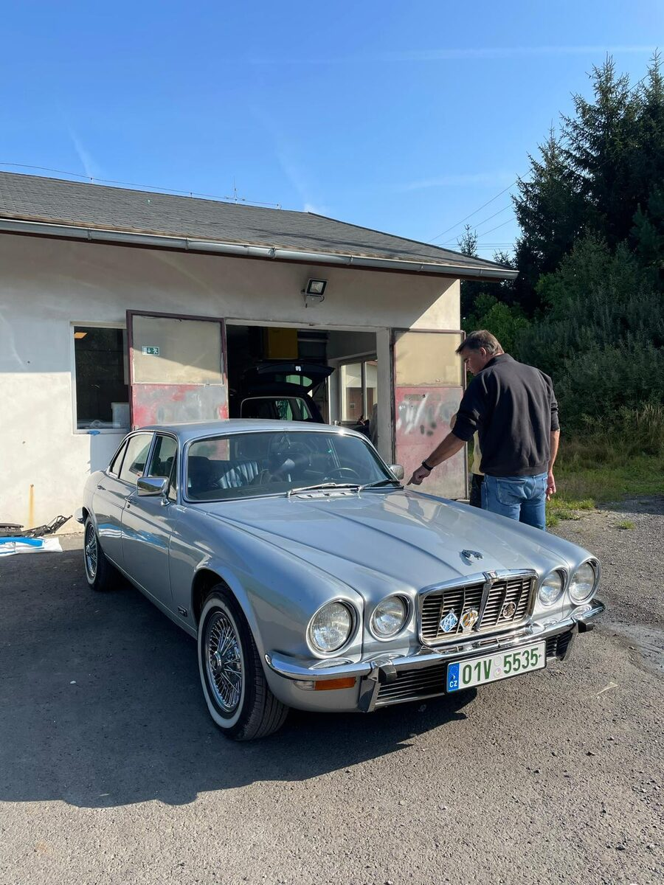

Provádíme lakování automobilů, opravy karoserie a přípravu vozu před lakováním. Specializujeme se také na renovace historických vozidel a veteránů a řešíme pojistné události všech pojišťoven. Léta zkušeností v oboru autolakýrnictví v Kyselce u Karlových Varů.
Lakýrnické a karosářské služby pro osobní i užitková vozidla.
Kompletní i dílčí lakování vozidel v barvě dle výrobce.
Opravy pomačkaných a poškozených částí karoserie.
Broušení, tmelení a příprava povrchu pro dokonalý výsledek.
Kompletní opravy karoserie po dopravní nehodě.
Vyřídíme pojistnou událost s libovolnou pojišťovnou – od nahlášení škody až po opravu vozidla.
Leštění a obnova původního laku vozidla.
Kompletní renovace historických vozidel a veteránů – karoserie i lak do původního nebo požadovaného odstínu.
Opravy odřenin, škrábanců a menších poškození.
Ukázky z naší dílny – lakování a renovace historických vozidel a veteránů.






Od prvního kontaktu až po předání hotové zakázky – jasně a bez komplikací.
Napište nebo zavolejte – stačí pár slov o tom, co potřebujete.
Prohlédneme vůz, navrhneme postup opravy a upřesníme cenu.
Karoserii opravíme, připravíme a nalakujeme v odstínu dle výrobce vozidla.
Hotové vozidlo zkontrolujeme a předáme zákazníkovi.
Autolakovna Milan Kubát působí v Kyselce u Karlových Varů a věnuje se lakování a karosářským opravám vozidel. Klademe důraz na kvalitní zpracování a osobní přístup ke každé zakázce.
Kromě běžných oprav a lakování se dlouhodobě věnujeme i renovacím historických vozidel a veteránů – od karosářských prací přes přípravu povrchu až po nástřik v původním nebo požadovaném odstínu.
Nabízíme lakýrnické a karosářské služby pro zákazníky z Kyselky, Karlových Varů a okolí – od drobných retuší po kompletní opravu karoserie po nehodě i renovaci historických vozidel a veteránů.
Ukázkové reference ilustrující typ spolupráce – po realizaci prvních zakázek je nahradíme reálnými hodnoceními zákazníků.
„Auto po nehodě vypadá jako nové, barva sedí dokonale."
„Rychlé vyřízení a solidní cena."
* Ukázkové reference, nikoli citace konkrétních osob.
Ať už jde o opravu po nehodě, kompletní lakování nebo renovaci veterána, rádi si vaše vozidlo prohlédneme a připravíme nabídku na míru.